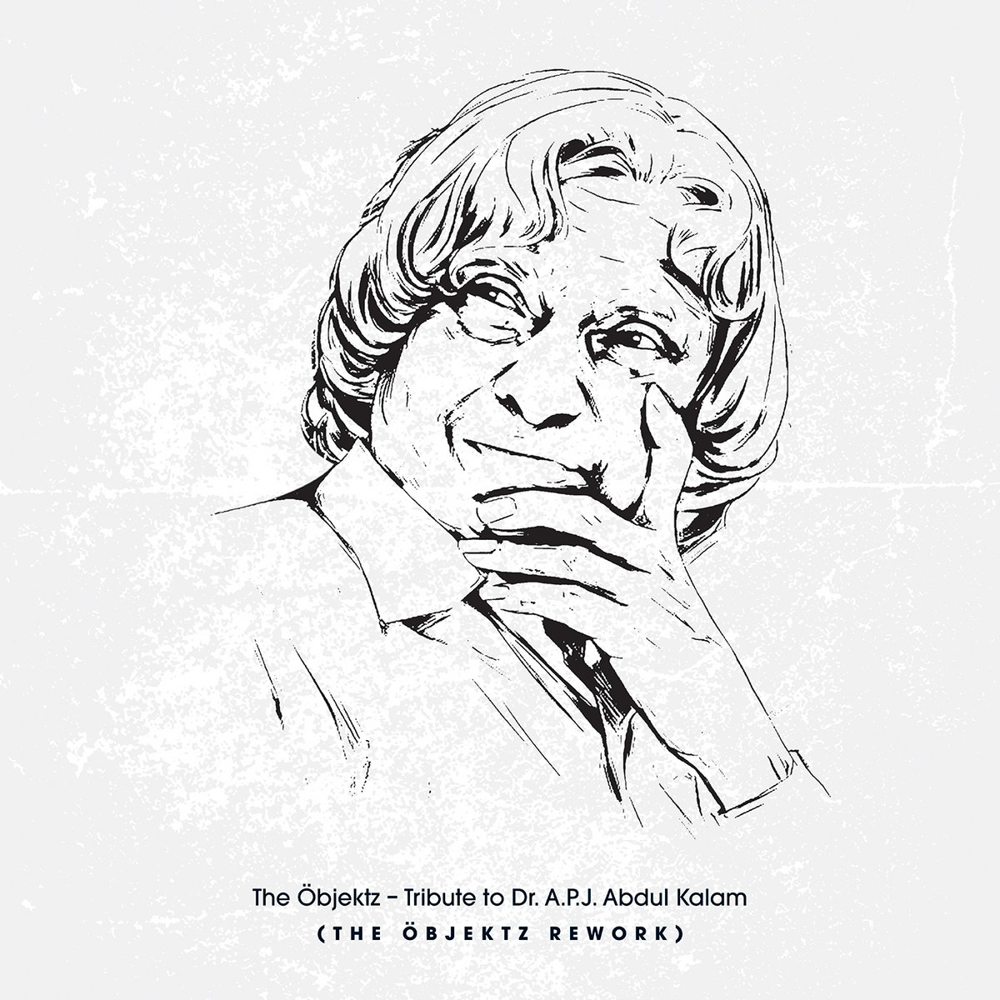

_

Things you should know about abdul kalam
- Born on October 15, 1931, Kalam came from a humble background. He sold newspapers to support his
family financially when he was a kid.
- Dr. Kalam is known as the father of Indian Missile Technology and has played a prominent role in
India’s 1998 nuclear weapons tests.
- He brought dignity to whatever he did. Even politics!
- Before becoming the president, Dr. Kalam worked as an Aerospace Engineer with DRDO and ISRO. He was called the “Missile Man” of India.
- Dr. Kalam was much more than a political figure. He was a scientist, writer, inspirational speaker and motivational figure.
- Dr. Kalam’s infectious personality had not just inspired Indians but also people across the globe.
- Kalam was nominated for Youth Icon of the Year award by MTV in 2003 and 2006. His age was 73 and 76 respectively then.
- In 1998, he along with cardiologist Dr Soma Raju developed a low-cost coronary stent. It was later named ‘Kalam-Raju Stent’ in their honour.
- Dr. Kalam had received several awards and recognition for his extra ordinary contribution to scientific research and modernization of defense technology in India.
- Dr. Kalam was a great colleague too and went an extra mile for his co-workers.
- When Dr. Kalam first moved to Rashtrapati Bhawan, he asked all luxurious rooms to be locked up as he didn’t want to use them.
- Dr. Kalam was a great inspiration to many, especially kids, and always inspired them to dream big and achieve great goals in life.